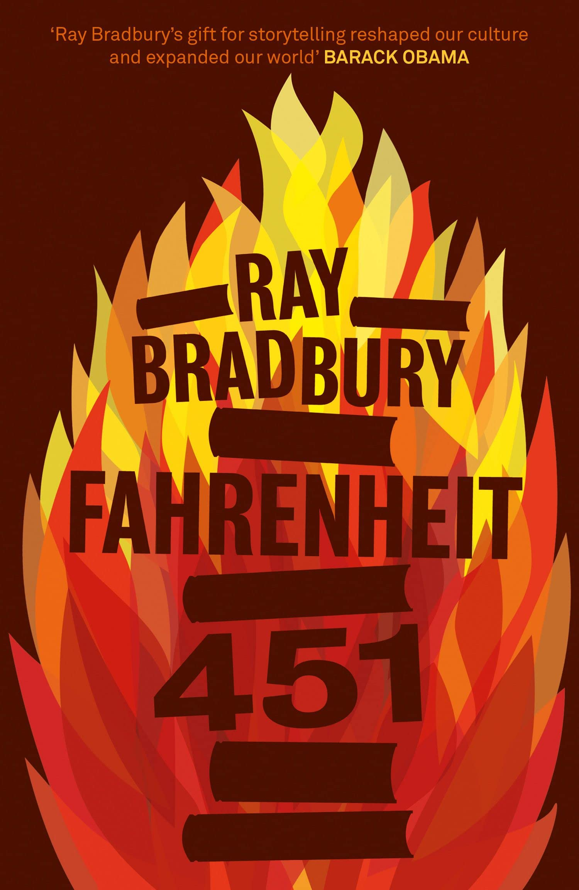
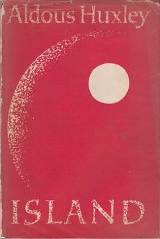
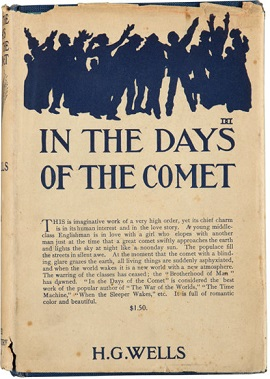
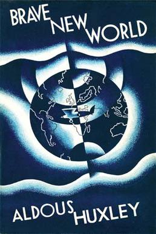
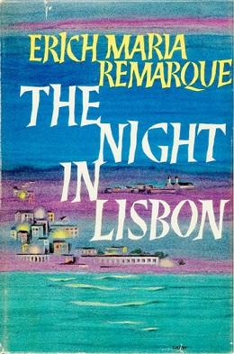
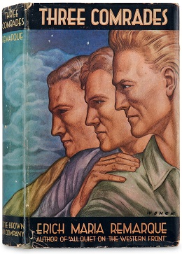
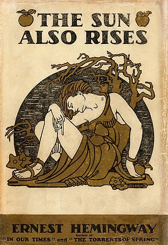

Utopia
1984
The story takes place in an imagined future in the year 1984, when much of
the world is in perpetual war. Great Britain, now known as Airstrip One, has become a province
of the totalitarian superstate Oceania, which is led by Big Brother, a dictatorial leader
supported by an intense cult of personality manufactured by the Party's Thought Police.

451
Fahrenheit 451 is a 1953 dystopian novel by American writer Ray Bradbury.
Often regarded as one of his best works, Fahrenheit 451 presents an American society where
books have been personified and outlawed and "firemen" burn any that are found.

Island
It is the account of Will Farnaby, a cynical journalist who is shipwrecked on
the fictional island of Pala. Island is Huxley's utopian counterpart to his most famous work, the
1932 dystopian novel Brave New World. The ideas that would become Island can be seen in a foreword
he wrote in 1946 to a new edition of Brave New World

In the Days of the Comet
An unnamed narrator is the author of a prologue ("The Man Who Wrote in the Tower")
and an epilogue ("The Window of the Tower"). In these short texts is depicted an encounter with a "happy,
active-looking" old man: the protagonist and author of the first-person narrative, writing the story of
his life immediately before and after "the Change".

Brave New World
In 1999, the Modern Library ranked Brave New World at number 5 on its list of the 100 best
English-language novels of the 20th century. In 2003, Robert McCrum, writing for The Observer, included
Brave New World chronologically at number 53 in "the top 100 greatest novels of all time",and the novel
was listed at number 87 on The Big Read survey by the BBC.
Novel

The Night in Lisbon
The story takes place in the opening months of World War II. Josef Schwarz is a refugee
who offers his visa and tickets for America to another refugee desperate to leave Lisbon.

Three Comrades
The story takes an abrupt turn as Pat suffers a near-fatal lung hemorrhage during a summer holiday
at the sea. Upon their return, Robert and Pat move in with each other, but she is scheduled to leave for a Swiss mountain
sanatorium come winter. It is this temporal limitation of their happiness which makes their remaining time together
so precious.

The Sun Also Rises
The novel is a roman à clef, the characters are based on people in Hemingway's circle and the action
is based on events, particularly Hemingway's life in Paris in the 1920s and a trip to Spain in 1925 for the Pamplona
festival and fishing in the Pyrenees.

The Great Gatsby
The novel was inspired by a youthful romance Fitzgerald had with socialite Ginevra King, and the
riotous parties he attended on Long Island's North Shore in 1922. Following a move to the French Riviera, Fitzgerald
completed a rough draft of the novel in 1924.

The Catcher in the Rye
The Catcher in the Rye is an American novel by J. D. Salinger that was partially published in serial
form from 1945–46 before being novelized in 1951. Originally intended for adults, it is often read by adolescents for its
themes of angst and alienation, and as a critique of superficiality in society.